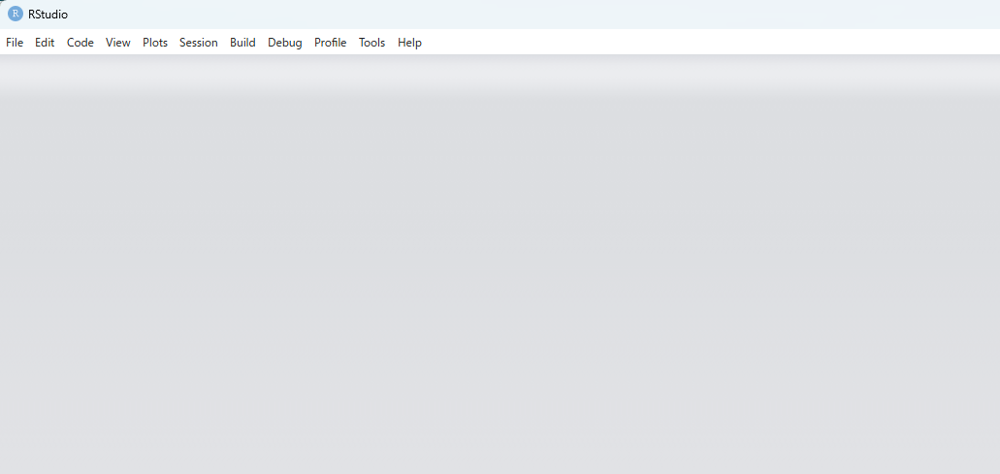
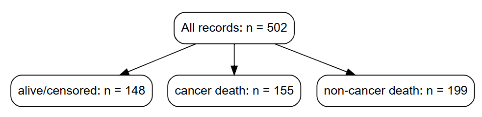
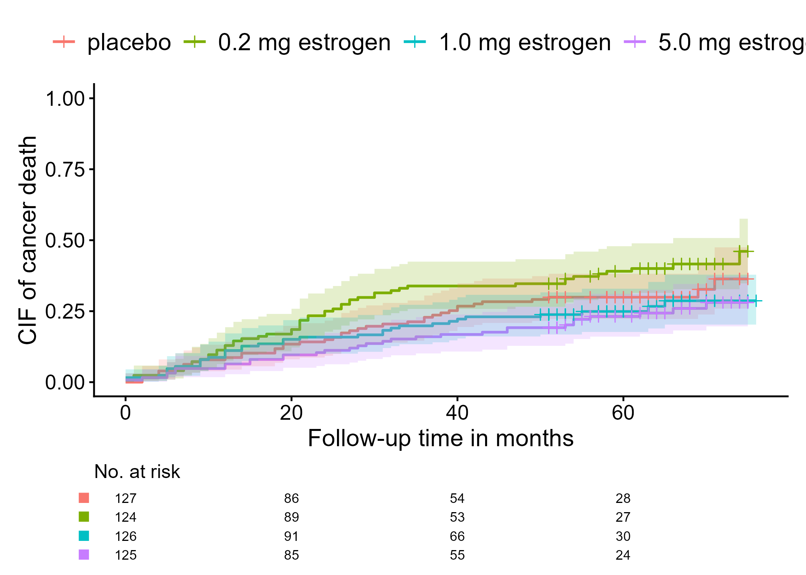

Have you ever wanted a simple way to separate the workspace where you run statistical analyses from the workspace an AI agent is allowed to inspect? Or have you grown tired of moving back and forth between RStudio and ChatGPT? This site introduces an AI-assisted R workflow.
By simply organizing the folder structure
- AI agents can more easily understand the workflow and context.
- Users can more easily manage what AI is allowed to access.
- QC results and logs can remain in predictable places.

The important point is not to ask AI to run straight into the analysis. This workflow follows a few simple principles.
- Separate the AI agent workspace from the RStudio workspace
- Separate planning from coding
- Build quality control (QC) into the statistical analysis workflow
- Support working records for statistical analysis workflows
- Keep the user responsible for decisions, result interpretation, and outputs
The airsetup package introduced here creates folders for
an AI-assisted R workflow. It does not provide statistical analysis
functions. Instead, it provides a folder structure, a minimal
AGENTS.md, a QC_STATUS.md tracker, and
optional QC skill templates.
There is no single correct way to check coding accuracy or perform QC. One project might use double programming, while another might use visual review. To support self-QC in AI & R workflows, lightweight QC skill templates are available.
Tutorial 1. Setup
Follow these three tutorials to experience the AI & R workflow. The first tutorial covers setup before asking AI agent to work on a task. We’re using the Codex app here, but there are no specific restrictions regarding AI agent tools.
Step 1. Install R, RStudio, airsetup and Codex app
- Install R
- Download the RStudio installer from the Posit site
- Download the Codex app installer from the OpenAI site
- Install
airsetupfrom GitHub with:
# install.packages("pak")
pak::pak("gestimation/airsetup")Step 2. Create a project folder with airsetup
- Run
airsetup()to create folders and Markdown files:AGENTS.mdQC_STATUS.md
- Through
AGENTS.md, instruct AI to separate the AI workspace from the R workspace and to support QC.

Tutorial 2. Planning
In the second tutorial, you will give Codex instructions and ask it
to plan a statistical analysis and R coding workflow. From this point
onward, the tutorial uses the demo-only airsetup_demo()
function to analyze the prostate dataset included in
airsetup. In Step 1, if a project folder already exists,
the demo files are added to that folder.
Step 1. Place files in the project folder
- Place AI-visible dummy data and R-execution data in the corresponding folder structures.
- In this demo, the dummy data uses the first three rows extracted
from the
prostatedataset. - Use the information from
prostate.Rdas context. - The following R code should place the context, dummy data, and R-execution data in the project folder.
# Check the first rows and structure of the data
data(prostate, package = "airsetup")
head(prostate)
str(prostate)
# Create folders and place files: context, dummy data, and R-execution data
root_dir <- "C:/demo"
airsetup_demo(root_dir)Step 2. Start a Codex project
- Start Codex and select the
ai_projectfolder as the project folder. - Enter a prompt in Codex.
Prompt: "Please inspect the files in ai_project folder."Step 3. Review a coding plan with Codex
- Enter prompts in Codex.
- Ask Codex to create an R-script coding plan, then review through chat whether the plan is appropriate.
- If the plan looks acceptable, approve it and move on to coding.
Prompt: "Please refer to demodata.rds and definition_demodata.txt. The goal
of this analysis is to describe the outcome, cancer death, using a flowchart and
cumulative incidence curves by treatment groups. The event of interest is cancer death.
Deaths other than cancer death should be treated as competing risks. The planned
coding for the event variable epsilon is 0 = alive/censored, 1 = cancer death, and
2 = non-cancer death. For the flowchart generation, refer to
https://gestimation.github.io/cifmodeling/reference/cifflowchart.html.
For the cumulative incidence curve estimation method,
refer to https://gestimation.github.io/cifmodeling/reference/cifplot.html.
First, use the QC skill to evaluate whether the context is clear enough to
proceed to R coding."Prompt: "Based on the QC results, please create an R-script coding plan."Prompt: "Use the QC skill to evaluate the coding plan."Tutorial 3. Coding
In the third tutorial, you ask Codex to write R scripts that produce analysis results using the R-execution data, following the coding plan Codex created and you approved.
Step 1. R coding and QC with Codex
- Enter a prompt in Codex.
- Ask Codex to write R scripts, then use chat as needed to ask questions and check whether the scripts are correct.
Prompt: "Please write the R scripts. I need both an R script for the
AI-checkable dummy data and an R script for R execution. Pay attention to the
RStudio working directory. I would prefer not to have to set it manually."Step 2. Run R in RStudio

- Load the R scripts generated in the
ai_outputfolder into RStudio and run them. - Be careful with the RStudio working directory. Code that depends on the working directory may not run in every environment.
- In that case, specifying the input dataset location may solve the
problem (replace
YYYYMMDDwith the execution date).
options(DEMODATA_RDS = "C:/demo/r_project/ai_hidden_data/initial_YYYYMMDD/demodata.rds")- Alternatively, you can manually set the working directory.
setwd("C:/demo/r_project/ai_hidden_data")Step 3. Review results with Codex
- Check the figures generated in the
r_output` folder. - With support from Codex, perform the final review of whether the analysis results are correct.


Final remark
You can install the development version of airsetup from
GitHub with:
# install.packages("pak")
pak::pak("gestimation/airsetup")Since this package is still in alpha, it has not yet been submitted
to CRAN, but it has passed more than 100 tests using
testthat. Running airsetup() has no effect on
any paths other than the one specified.
In this tutorial using airsetup_demo(), optional QC
skill templates are generated in the agent_control/ folder.
By specifying a skill in the prompt, you can perform higher-quality QC
tasks.
-
QC_SKILL_CONTEXT.md: checks whether the context is clear enough before drafting a plan or writing R code. -
QC_SKILL_PLAN.md: checks whether a general coding plan or analysis specification contains enough information for R implementation. -
QC_SKILL_SAP.md: performs evidence-first clinical-trial SAP QC using a paraphrased 55-item SAP checklist and an M11/E9(R1)-informed supplement. An M11 semantic map can be used when available but is not required. -
QC_SKILL_RESULT.md: checks whether analysis results are internally consistent, aligned with the plan, and safe to interpret. -
QC_SKILL_M11SEMANTIC.md: supports evidence-first M11-informed semantic organization across multiple clinical-trial materials before R planning or R coding. It is based on a compact analysis-critical map. It should be used only for M11/electronic-protocol tasks or complex clinical-trial semantic review, not ordinary context QC.
If you’re interested in how AI behaves within this workflow, please
take a look at the AGENTS.md file, the folder structure,
and the context documentation generated by
airsetup_demo().
library(airsetup)
airsetup_demo("C:/demo")